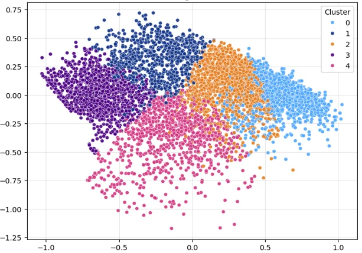
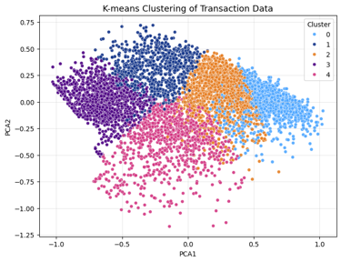
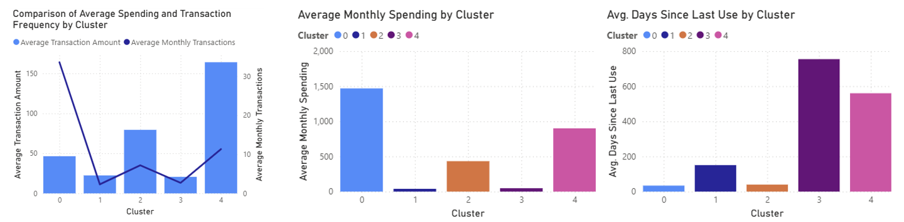
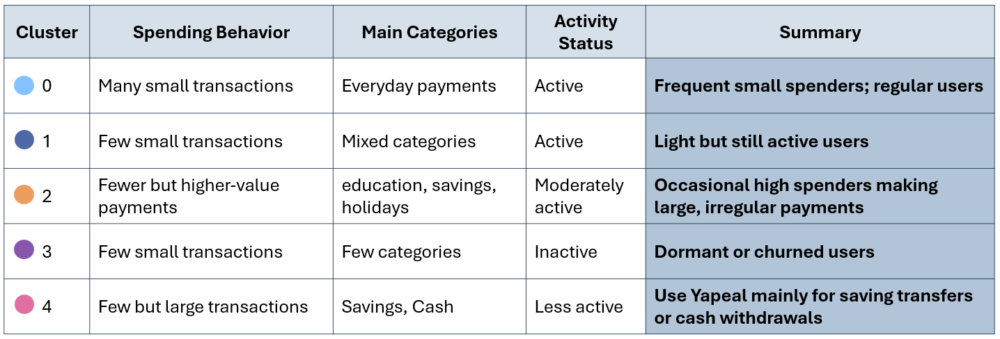
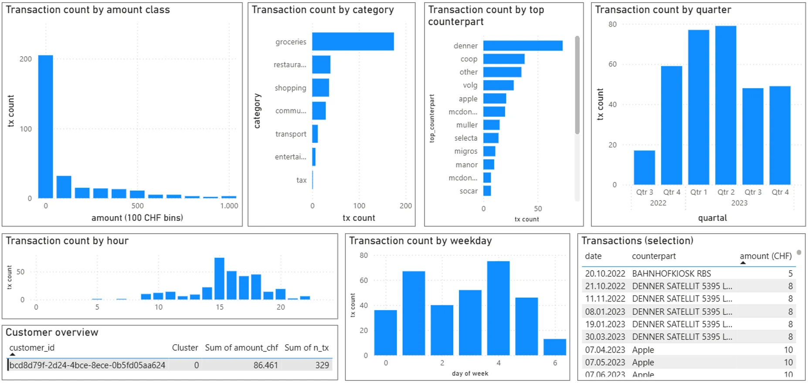
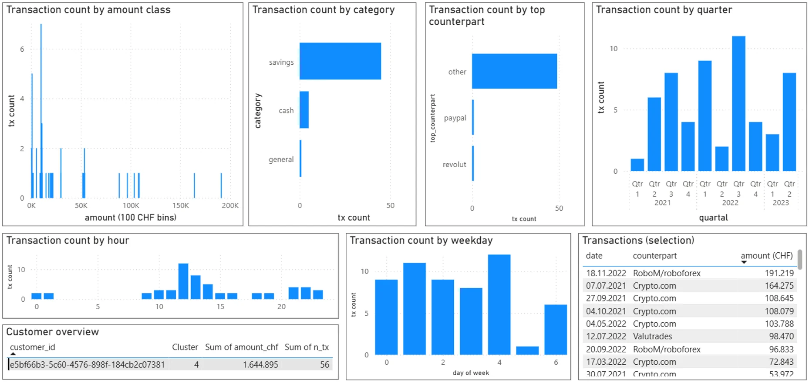
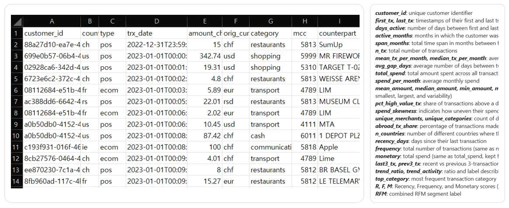
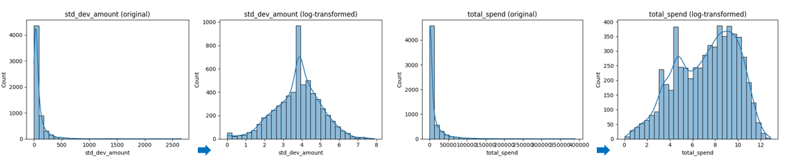
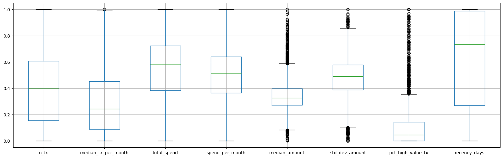
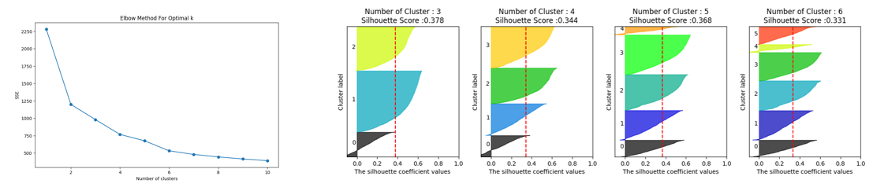

Customer data analysis

I built a customer segmentation framework from 3 years of transaction data for a digital banking app. The goal was to turn raw transaction logs into actionable customer segments that product and marketing teams can use for personalization and CLV growth. The pipeline: feature engineering → preprocessing → PCA → K-means++ → evaluation → interpretation.
What I delivered:
I owned the analytical core of this project : from feature design and clustering decisions to segment interpretation, ensuring the output was both statistically sound and usable for business teams.
Product, marketing, and growth teams at a digital banking app
5 weeks
User behavior differed significantly across customers, but strategy lacked a clear segmentation model. This limited targeted engagement and CLV growth.
💡 Solution: I engineered customer-level RFM+ behavioral features and segmented users with PCA + K-means++ into five distinct clusters.
Clusters can be mathematically “good” but still fail if stakeholders cannot understand what each segment represents.
💡 Solution: I characterized clusters using spending scale, frequency, recency, and category patterns, then created clear segment summaries and visuals to make them decision-ready.
Even strong segmentation is wasted unless it informs concrete engagement strategies and prioritization.
💡 Solution: I supported an action mapping for each segment (retention / upsell / reactivation) so the segmentation can be operationalized in campaigns and product decisions.

The clustering analysis revealed five distinct behavioral segments. To make the results usable for non-technical teams, each cluster was interpreted in terms of spending behavior, activity level, and real-world usage patterns.

The charts highlight clear differences in how each segment uses the product. Cluster 0 shows high transaction frequency with low average amounts, indicating frequent everyday usage. In contrast, Cluster 2 and Cluster 4 are characterized by lower frequency but significantly higher transaction values, reflecting more deliberate, goal-driven usage such as savings or occasional large payments.
Activity patterns further separate the segments. Cluster 3 stands out with long recency and minimal activity, signaling dormant or churned users, while Cluster 0 and Cluster 1 remain consistently active with shorter time since last use. These differences suggest distinct engagement and churn risk profiles across segments.
Taken together, the visualizations show that customer value is driven by different behavioral mechanisms—frequency for some segments and transaction size for others—underscoring the need for segment-specific engagement strategies rather than a one-size-fits-all approach.


This persona represents highly active users who make frequent, low-value transactions for everyday expenses.They rely on the app as a daily payment tool, indicating strong engagement but limited value per transaction.

This persona represents users who make infrequent but high-value transactions, primarily for savings and cash-related purposes. They engage with the app selectively rather than daily, indicating trust in the platform for larger financial movements.
Goal: Identify customer segments based on transaction behavior
Dataset: 3 years of Y banking transaction data
Methods: Feature engineering, PCA, K-means clustering
Outcome: 5 distinct customer segments with business insights
Original fields: customer_id, country, type, trx_date, amount_chf, orig_currency, category, mcc, counterpart
Output: aggregated customer table with engineered features

Transaction distributions were skewed and heavy-tailed, which can distort distance-based clustering. I applied transformations to stabilize the feature space.


Many engineered features were correlated. I used PCA to reduce multicollinearity and noise while preserving the behavioral signal.
I applied K-means++ and selected the number of clusters by balancing quantitative metrics with business interpretability.
